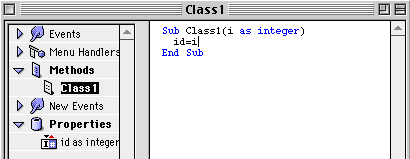

Cover Story - DR2 features
By Dan Vanderkam, editor on the run
It seems like it's brand new, but believe it or not, there have been almost as many DR2 releases now as there were DR1s. Shocked? So am I.
While not nearly as many major features have been added in the DR2s, there HAVE been a lot, and they've all been horribly underdocumented. So, in this article, I'll try to explain the top five new features besides databases that I haven't explained yet: Variant data types, the new listbox, the new Sprite Surface, the RGBSurface object, and class constructors. So open up a copy of DR2, and hop on for the ride!
Feature 1: Variant data types
The only major new feature in DR2r30 besides database improvements was the Variant data type. As I mentioned in the news section, it allows you to store anything in one variable type. If v is a variant, v="Hi" and v=3.3 will both work. Here's a lengthier example:
Dim V1 as Variant
Dim s as string, i as integer
V1="Hi"
s=V1
msgbox s
v=20
i=v
msgbox str(i)
This seems simple enough, but there's more!
Using the VarType function, you can find out what type of data the variant contains. For example, if v contains an integer, then VarType(v) would return 2—the code for an integer. Other codes include 5 for a double, 8 for a string, 11 for a boolean, and 13 for an object.
But there's still more! You can use the new collection class to create a collection of variants. To use it, you use its Add method. This takes two parameters: a variant, and a string to identify it. Here's an example:
Dim C as collection
dim v, v2, v3 as Variant
v="William Thomas Riker"
v2=3.333
v3=true
c.Add v, "#1"
c.Add v2, "#2"
c.Add v3, "#3"
Now, if we want to access these items, we use the
Item methods. You can either supply a string (the one you specified when you used
Add), or an integer (just like a normal array). Here's a continuation of the code
we just used:
Dim s as string, i as single, b as boolean
s=c.Item("#1")
i=c.Item(1)
b=c.Item("#3")
As you may have guessed, that stores all the collection items in variables that are of the correct type. A collection is a essentially a special array that can contain anything.
Feature 2: The New Listbox
One of the neat things about DR2 versions is the ability to put checkboxes in a cell (like the Extensions Manager). However, DR2 can also let the user EDIT cells in a listbox (like the Finder). There are some nifty new tools to do this, and I'll explain them all!
Method 1: ColumnType
Typically, if you're going to put a checkbox or editable cell in a listbox, you'll put one in each cell in an entire column. That's what the new listbox's ColumnType() property does. If you want to make the first column have Checkboxes, you could use the statement Listbox1.ColumnType(0)=2. Change the 2 to a 3 to make it an editable cell. 1 or 0 is for a normal column, but it defaults to this.
Method 2: CellType
Sometimes, there ARE exceptions. For example, you might not want a certain cell to be editable, even if the rest of the column was. That's where the CellType property comes in.
By default, every cell in a column is the column's default type. However, if you use the CellType method (its parameters are the row and then column), you can set styles on an individual basis. The same values are used for this as the ColumnType property.
So, to wrap it up, if you put this code in, it would make every cell in column #1 have a checkbox, and every cell in column #2 (except for row #3) be editable:
ListBox1.ColumnType(0)=2
ListBox1.ColumnType(1)=3
ListBox1.CellType(1, 2)=1
Using it
All of these great new features do us no good if we can't manipulate them! One new property, and one new event help us here.
First of all, whenever a checkbox in a list is clicked, or text in a cell is edited by the user, the CellAction(row, column) event is fired. The Row and Column parameters tell you which cell was changed.
Secondly, the CellCheck(row,column) boolean property lets you find out whether or not a cell is checked, and set whether or not it's checked.
Also, you can use the Cell(row, column) property to find out a cell's text. This has been around for a while, and is covered in the online reference.
Here's some code to show you how it works:
Sub CellAction(row as integer, column as integer)
If ListBox1.ColumnType(column)=2 then
If ListBox1.CellCheck(row, column) then
Msgbox "It's checked"
Else
MsgBox "It's NOT checked. Nooooo!"
End if
Elseif Listbox1.ColumnType(column)=3 then
Msgbox ListBox1.Cell(row, column)
End If
End Sub
Feature 3: The New SpriteSurface
The SpriteSurface (which was the cover in the August Issue) is essential for making games in RB. However, in DR2r19, the first run at a brand new sprite engine was introduced. It was the same as the old one (which was added in DR1r34 by the way), but offered two improvements: the PaintTile event, and the Scroll method. As is usual, I'll explain these...
The idea behind the new Sprite engine is that you can make a background using tiles. This allows you to make patterns for a background (which you see in almost every side-scrolling game), and scroll the background easily. First off, there's the PaintTile event. Here's how to use it.
PaintTile has three parameters. One is a graphics object that lets you draw in the 64x64 tile. The second and third refer to the position of the tile, so you can decide what to draw in it. In this example, we'll make a sky and a ground that scroll.
First off, we'll want to put this in the PaintTile event:
Sub PaintTile(g As Graphics, xpos as integer, ypos as integer)
if ypos<5 then
if xpos=5 then
g.ForeColor=rgb(255,255,255)
else
g.ForeColor=rgb(128, 128, 255)
end if
else
g.ForeColor=rgb(128, 255, 128)
end if
g.FillRect 0, 0, 64, 64
End Sub
As you can see, that code fills the tile with a nice shade of blue if the tile's Y position is less than 5. If it's greater than 5, the routine assumes it's the ground, and fills it with a nice shade of green. It also makes a single white cell, so you can see it scroll horizontally too.
Now, let's see the true usefulness of tiles—their ability to scroll.
In the SpriteSurface's NextFrame event, put this code:
Sub NextFrame
dim dx, dy as integer
if me.KeyDown(126) then // 126=Up Arrow
dy=-10
elseif me.KeyDown(125) then // 125=Down Arrow
dy=10
end if
if me.KeyDown(123) then // 123=Left Arrow
dx=-10
elseif me.KeyDown(124) then // 124=Right Arrow
dx=10
end if
if dx<>0 or dy<>0 then
me.Scroll dx, dy
end if
End Sub
Now that was rather long! If that code confused you, all it does is to check which arrow keys are down, and (if neccesary) scroll the canvas using the Scroll method. Its parameters, dx and dy, are integers that determine how far to scroll in each direction.
It is slow, but it's a neat feature, and will be improved upon in the future (at least I hope it will).
Feature 4: RGBSurface
The RGBSurface object was added in DR2r2, making it one of the first DR2 features. The RGBSurface is very similiar to the Graphics object, except you can only use it with 32 bit pictures created using NewPicture, and the only way to get info from it or draw to it is through the pixel method.
Now why would you ever want to use something with such large limitations? Simply put: Speed.
To get an RGBSurface object, you use this code (or something similiar to it):
Dim P as Picture
Dim R as RGBSurface
P=NewPicture(64,64,32)
R=P.RGBSurface
We now have an RGB surface! The NewPicture command made a 64x64, 32-bit picture, and we got an RGBSurface using its cleverly named "RGBSurface" property. Now, let's draw to it.
R.Pixel(1,1)=rgb(10,10,10)
r.Pixel(2,2)=rgb(20,20,20)
This could keep on going and going, but for the sake of space, we won't. Also, you can still use the graphics object for a picture that you've used an RGBSurface with. RGBSurfaces are just added speed boosts.
Just how much faster is it? I ran some speed tests with it against the graphics object using the following code:
dim G as Graphics
Dim P as Picture
Dim R as RGBSurface
dim i, j as integer
dim s1, s2 as single
P=NewPicture(256,256,32)
R=P.RGBSurface
G=P.Graphics
s1=ticks
for i=1 to 256
for j=1 to 256
r.Pixel(i,j)=rgb(200,200,200)
next
next
s1=ticks-s1
s2=ticks
for i=1 to 256
for j=1 to 256
g.Pixel(i,j)=rgb(200,200,200)
next
next
s2=ticks-s2
I set a breakpoint after the last line, and checked out s1 and s2 in the Variables window. The result? The RGBSurface won. It took a total of 6 ticks. The Graphics object took a whopping total of 161.
Just for the sake of the example, I tried this with a 512x512 picture too. The RGBSurface won this 31 to 684. It filled 262,144 pixels in just over half a second!
So, if you have a program that uses the graphics object's .Pixel method a lot, use an RGBSurface—it's 2000 to 2600 percent faster. Now THAT'S one heck of a speed jump!
Feature 5: Class Constructors
Have you ever made a class that required some sort of Initialize method? Something that had values that needed to be set whenever it was created? If it was a control subclass, you could use its Open event. If it wasn't, you had to create a method that was always called after you used the New statement to make the class.
If you've had this problem, and have DR2r14 or later, then constructors are perfect for you!
Essentially, you can make any method in a class fire when it's instantiated. Just give it the same name as the class.
For example, make a class called "Class1". Next, make a property called "id as integer". Then, make a new method called "class1" with one property: "i as integer". For its code, put "id=i". It should now look like this:

You've made a constructor! To see it in action, put this code in a pushbutton, and click it:
As you can see, the Class1 method is fired whenever you click the button. And, as the message box confirms, id IS set.
You can also have contructor routines return data, and take any number of parameters. And best of all, thanks to method overloading (see tips, this issue) you can make multiple constructors for different situations!
Well, that was fun! If anything, this article should have shown you that, even if the changes in DR2 aren't as visible, they're still very, very useful.